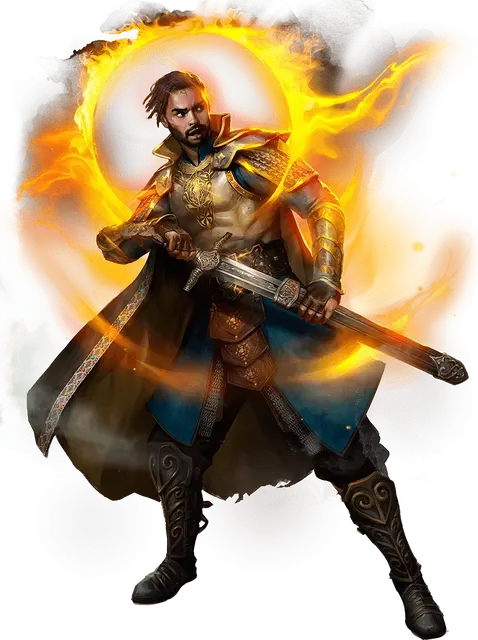

Зенк Йендар
Xenk Yendar
Средний Гуманоид (Паладин), законно-добрый, именной НИП

Класс Доспеха 15 (полулаты)
Хиты 157 (21к8 + 63)
Скорость 30 футов
| мод | спас | ||
|---|---|---|---|
| СИЛ | 19 | +4 | +8 |
| ЛОВ | 11 | +0 | +0 |
| ТЕЛ | 16 | +3 | +3 |
| мод | спас | ||
|---|---|---|---|
| ИНТ | 14 | +2 | +2 |
| МДР | 16 | +3 | +3 |
| ХАР | 17 | +3 | +7 |
Навыки Атлетика +8, Выживание +7, История +6, Проницательность +7
Иммунитет к состояниям испуг, отравление, очарование
Чувства тёмное зрение 60 футов, пассивное Восприятие 13
Языки Общий, Подземный, Тэйский
Опасность 10 (5900 опыта)
Бонус мастерства +4
Особенности
Аура защиты. Зенк и его союзники в пределах 10 футов совершают спасброски с преимуществом.
Действия
Мультиатака. Зенк совершает три атаки Кинжальным мечом и использует Кинжальномечный росчерк, который может заменить Очищающим касанием если оно доступно.
Кинжальный меч. Выберите атаку, соответствующую текущей форме кинжального меча (см. бонусное действие Изменение Кинжального меча):
Длинный меч. Рукопашная атака оружием: +8 к попаданию, досягаемость 5 футов, одна цель. Попадание: 8 (1к8 + 4) рубящего урона или 9 (1к10 + 4) рубящего урона при использовании двумя руками, плюс 6 (1к12) урона излучением.
Короткий меч и кинжал. Рукопашная атака оружием: +8 к попаданию, досягаемость 5 футов, одна цель. Попадание: 7 (1к6+4) колющего урона плюс 6 (1к12) урона излучением.
Кинжаломечный росчерк. Выберите вариант, соответствующий текущей форме кинжального меча (см. бонусное действие Изменение Кинжального меча):
Длинный меч. . Зенк магическим образом отделяет лезвие меча от его рукоятки и запускает его в существо, которое видит в пределах 30 футов. Цель должна совершить спасбросок Ловкости Сл 16. При провале цель пронзается мечом, получает 14 (3к6 + 4) колющего урона и падает ничком. В конце текущего хода лезвие магически возвращается в рукоять.
Короткий меч и кинжал. Зенк хлещет обоими оружиями. Каждое выбранное им существо в пределах 10 футов от него должно совершить спасбросок Ловкости Сл 16. При провале существо получает 7 (2к6) колющего урона и до начала следующего хода Зенка совершает с помехой броски атаки. При успехе существо получает половину урона и не получает других эффектов.
Очищающее касание (1/день). Зенк касается существа в пределах 5 футов от себя. Цель магическим образом восстанавливает 27 (6к8) хитов и получает преимущество заклинания малое восстановление [lesser restoration].
Бонусные действия
Изменение Кинжального меча. Зенк меняет форму своего кинжального меча, выбирая одну из следующих форм: длинный меч или короткий меч в одной руке и кинжал в другой
Описание
Выросший в Тэе Зенк Йендар дал клятву преданноcти, желая помогать невинным. Рыцарь в сияющих доспехах до мозга костей, лучше всего он вдохновляет своих союзников на добрые дела. На лезвии его кинжального меча выгравированы на Небесном языке слова "Ни добродетель, ни клинок не сломаются".
Зенк стареет медленнее, чем обычный человек, и с этим даром приходит бремя перспективы. Его долголетие как-то связано с кошмарным приходом к власти Сзасса Тэма и тем, что Зенку удалось спастись от лича.
Сейчас Зенк живет в Щите Морнбрина и путешествует по Фаэруну в поисках зла, которому нужно помешать. Он подходит к проблемам с абсолютной серьезностью намерений, и этот метод совсем не увязывается с беспечностью Эджина.